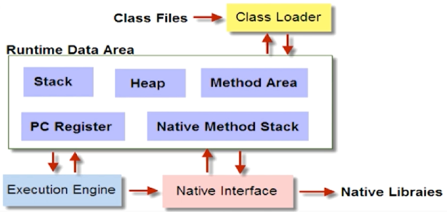
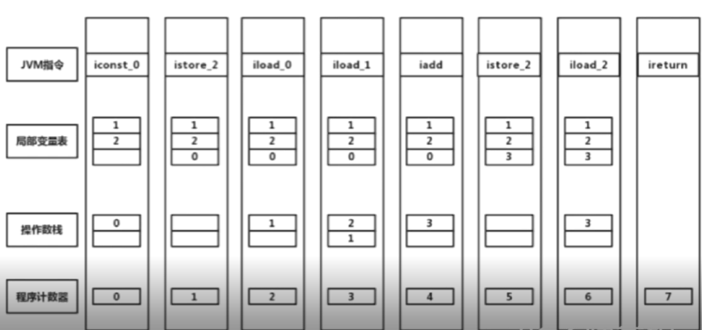
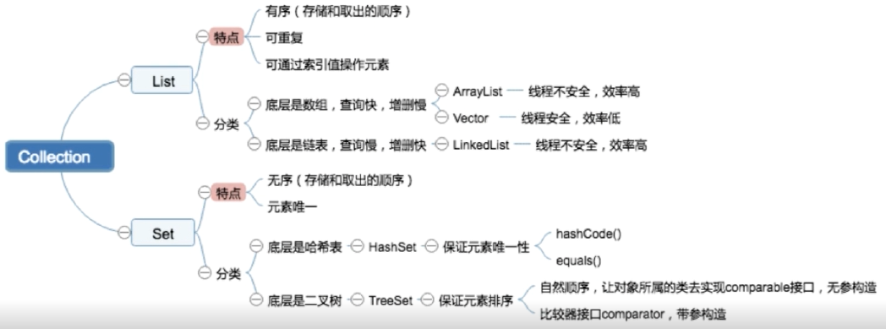

面试专题
操作系统
进程和线程
进程和线程的区别
进程是操作系统资源分配的最小单位
线程是程序执行的最小单位
进程有独立的内存空间，线程共享进程的内存空间
线程调度
- 时间片轮转调度
- 先来先服务调度
- 高优先权优先调度
线程切换步骤
线程的上下文切换，切换的代价
线程间通信 – IPC
- 共享内存
- UnixSocket
- MessageQueue
- Signal
- Semaphore
- Pipe
协程
- 协程既不是进程也不是线程，协程仅仅是一个特殊的函数，协程它进程和进程不是一个维度的。
- 一个进程可以包含多个线程，一个线程可以包含多个协程。
更轻量化，在用户态调用，代价比线程上下文切换低，Java第三方协程框架
网络
OSI七层协议
OSI 并不是一个标准，只是一个概念型框架

物理层
- 传输比特流
- 定义了物理设备的标准(网线类型，光纤接口等)
- 单位比特
- 网卡也在这一层工作
数据链路层
- 定义了如何格式化数据进行传输，控制物理介质的访问
- 错误检测，纠正
- 将比特数据组成帧，交换机在这层，对帧解码并发送到正确的接收方
网络层
- 把网络地址翻译为物理地址
- 决定数据如何从发送方路由到接收方
- 路由器属于网络层
- 数据包
- 协议: IP
传输层
- 解决主机间的数据传输
- OSI中最主要的一层
- 传输协议同时进行流量控制
- 将数据包强行分割(分割成数据片并给予序列号)
- TCP协议和UDP协议
会话层
- 自动收发，自动寻址
- 建立和管理应用程序之间的通信
- 解决不同系统之间的通信语法的问题
表示层
- 网络协议，需要固定长度，组成的消息头
- 更方便接收方了解接收的包
应用层
- 更方便的应用接收到的数据
- HTTP协议
先自上(应用层)而下添加数据头，后自下而上处理数据头部
OSI的标准:TCP/IP
先自上(应用层)而下添加数据头，后自下而上处理数据头部
TCP三次握手
基于字节流，将应用层的数据流分割成报文段并发送给目标节点的TCP层
数据包都有序号，对方收到则发送确认ACK确认，未收到则重传。
使用校验和来校验的数据在传输过程中是否有误。

TCP Flags:
- URG: 紧急指针标志 urgent
- ACK: 确认序号标志 acknowledgment
- PSH: push 标志
- RST: 重置连接标志 Reset
- SYN: 同步序号，用于建立连接过程
- FIN: finish标志，释放连接
SYN = 1， ACK = 0 请求链接
A => B 通信过程
A 打开 发送SYN = 1, seq = x,进入SYN_SEND状态，等待服务器确认
B 被动打开 发送 SYN = 1, ACK = 1, seq = y, ack = x + 1，此时服务器进入SYN_RECV状态
A 接收后发送 ACK = 1, seq = x + 1, ack = y + 1 ，双方进入ESTABLISHED状态

为什么需要三次握手
为了初始化Sequence Number 的初始值
起因:
Server接收到Client的SYN，回复SYN-ACK的时候未收到ACK
Server不断充实直至超时，Linux默认等待63秒才断开连接
针对SYN Flood的防护措施
TCP的四次挥手
A => B 四次挥手
A: FIN = 1, seq = u, FIN_WAIT_1
B: ACK = 1, seq = v, ack = u + 1 ,进入CLOSE_WAIT状态(半关闭状态)， 客户端进入 FIN_WAIT_2
B: FIN = 1, ACK = 1, seq = w, ack = u + 1, LAST_ACK
A: ACK = 1, seq = u + 1m, ack = w + 1, TIMEWAIT (2 * MSL)

为什么又TIME_WAIT状态
(2MSL) 两倍最大报文段传输时间
原因:
- 确保有足够的时间让对方收到ACK包
- 避免新旧连接混淆
为什么需要四次握手才能断开连接
因为全双工，发送方和接收方都需要FIN报文和ACK报文
服务器出现大量CLOSE_WAIT状态的原因
对方关闭socket连接，我方忙于读写，没有及时关闭连接
- 检查代码，特别是释放资源的代码
- 检查配置，特别是处理请求的线程配置
UDP
UDP 特点
- 面向非连接
- 不维护连接状态。支持同时向多个客户端传输相同的消息
- 数据包报头只有8字节，额外开销小
- 吞吐量只受限于数据生成速率、传输速率以及机器性能
- 尽量交付，不需要维护复杂的状态表
TCP 和 UDP 的区别
- 面向链接 vs 无连接
- 可靠 vs 不可靠
- 有序性 vs 无序性
- 速度慢 vs 速度快
- 重量级(20) vs 轻量级(8)
TCP 滑动窗口
- RTT: 发送数据包到收到对应ACK
- RTO: 重传时间间隔
RTO 由 RTT 计算
滑动窗口: 流量控制和乱序重排
HTTP
超文本传输协议
- 支持客户/服务器模式 (Client - Server)
- 简单快速 (get/post)
- 灵活
HTTP 请求步骤
- 客户端连接到web服务器
- 发送HTTP请求
- 服务器接受并返回HTTP响应
- 释放连接TCP连接
- 客户端浏览器解析HTML内容
在浏览器地址栏键入一个URL，按下回车之后经历的流程
- 逐层DNS解析
- TCP连接(3次)
- 发送HTTP请求
- 服务器处理请求并返回HTTP报文
- 浏览器解析渲染
- 连接结束(4次挥手)
HTTP 状态码
五种可能的取值
- 1XX: 指示信息–表示请求已经接收，继续处理
- 2xx: 成功– 表示请求已被成功接收、理解、接受
- 3xx: 重定向–要完成请求必须进行进一步操作
- 4xx: 客户端错误–请求有语法错误或请求无法实现
- 5xx: 服务器端错误–服务器未能实现合法的请求
常见状态码
- 200 OK: 正常返回
- 400 Bad Request:客户端请求有语法错误，无法被服务器理解
- 401 Unauthorized: 请求未经授权，这个状态代码必须和WWW-Authenticate 报头域一起使用
- 403 Forbidden: 服务器收到请求，但是拒绝提供服务
- 404 Not Found: 请求资源不存在 (例如输入了错误的URL)
- 500 Internal Server Error: 服务器发生了不可预期的错误
- 503 Server Unavailable: 服务器当前不能处理客户端的请求，一段时间后可能恢复正常。
GET 和 POST 请求的区别
从三个层面来解答
- HTTP报文层面，GET将请求信息放在URL，POST放在报文体中
- 数据库层次: GET符合幂等性和安全性，POST不符合
- 其他层面: GET可以被缓存、被存储，而POST不行
Cookie 和 Session的区别
Cookie
- 是由服务器发给客户端的特殊信息，以文本的形式存放在客户端
- 客户端再次请求的时候，会把Cookie回发
- 服务器接收到后，会解析Cookie生成与客户端相对应的内容
发送过程
- Client => HTTP req Server
- Client <= HTTP resp + set-Cookie Server
- Client => HTTP req + Cookie Server
- Client <= HTTP resp Server
Session
- 服务器端的机制，在服务器上保存的信息
- 解析客户端请求并操作session id ，按需保存状态信息
实现方式
- Cookie 来实现
- URL来回写实现(如果Cookie被禁用)
- Client => req Server
- Client <= resp + set-Cookie:JSESSIONID=xxx Server
- Client => req + Cookie:JSESSIONID=xxx Server
- Client <= resp server
区别
- Cookie 数据存放在客户的浏览器，Session数据存放在服务器上
- Session相对于Cookie 更安全
- 若考虑减轻服务器负担，应当使用Cookie
HTTP 和 HTTPS
HTTP TCP IP
HTTPS SSL/TLS TCP IP
保护交换数据隐私，安全版的HTTP
SSL
(security sockets layer, 安全套接层)
- 为网络通信提供安全及数据完整性的一种安全协议
- 是操作系统对外的API，SSL3.0后更名为TLS
- 采用身份验证和数据加密保证网络通信的安全和数据的完整性
HTTPS 数据传输流程
- 浏览器将支持的加密算法信息发送给服务器
- 服务器选择一套浏览器支持的加密算法，以证书的形式发回给浏览器(CA机构，有效期，公钥，所有者)
- 浏览器验证证书的合法性，并结合证书公钥加密信息发送给服务器
- 服务器使用私钥解密信息，验证哈希，加密相应信息回发浏览器
- 浏览器解密响应消息，并对消息进行验证，之后进行加密交互数据
HTTP和HTTPS的区别
- HTTPS需要到CA申请证书，HTTP不需要
- HTTPS密文传输，HTTP明文传输
- 连接方式不同，HTTPS默认使用443端口，HTTP使用80端口
- HTTPS= HTTP+加密+认证+完整新保护，比HTTP更安全
HTTP => HTTPS 301跳转也可能被劫持，因此要用HSTS优化
Socket
Socket是对TOC/IP的抽象，是操作系统对外开放的接口
Socket通信流程
编写一个网络应用程序,有客户端与服务器端,客户端向服务器发送一个字符串,服务器收到该字符串后将其打印到命令行上,
然后向客户端返回该字符串的长度,最后,客户端输出服务器端返回的该字符串的长度,分别用TCP和UDP两种方式去实现
数据库
如何设计一个关系型数据库(RDBMS)
程序实例
- 存储管理
- 缓存机制
- SQL 解析
- 日志管理
- 权限划分
- 容灾机制
- 索引管理
- 锁管理
存储(文件系统)
索引模块
为什么要使用索引
快速查询数据
什么信息能成为索引
主键，唯一键以及普通键
索引的数据结构
生成索引，建立二叉查找树进行二分查找
生成索引，建立B-Tree 结构进行查找
生成索引，建立B+Tree 结构进行查找
生成索引，建立Hash结构进行查找

B Tree
定义
- 根节点至少包括两个孩子
- 书中每个节点最多含有m铬孩子( m>= 2)
- 除根节点和叶节点外，其他每个节点至少有ceil(m/2)个孩子
- 所有叶子节点都位于同一层
- 假设每个非终端节点中包含有n个关键字信息，其中：
- Ki(i=1…n)为关键字，且关键字按顺序升序排序K(i-1) < Ki
- 关键是个数满足: [ceil(m / 2) - 1] <= n <= m - 1
- 非叶子节点的指针:P[1],P[2],… P[M], P[1]指向的关键字小于K[1]的子树，
P[M]指向关键字大于P[M -1] 的子树，其他P[i]指向关键字属于(K[i-1], K[i])的子树
B+ Tree
B+ 树是B树的变体，其定义基本与B树相同，除了：
- 非叶子节点的子树指针与关键字个数相同
- 非叶子节点的子树指针P[i],指向关键字值([K[i],K[i+1])
- 非叶子节点仅用来索引，数据都保存在叶子节点中
- 所有叶子节点均有一个链指针指向下一个叶子节点
结论
B+ Tree更适合用来做存储索引
- B+ Tree 的磁盘读写代价更低
- B+ Tree 的查询效率更加稳定
- B+ Tree 更加有利于对数据库的扫描
Hash索引
优点 查询速度O(1)
缺点:
- 仅仅能够满足’=’,’IN’, 不能使用范围查询
- 无法被用来避免数据的排序操作
- 不能利用部分索引键查询
- 不能避免表扫描
- 遇到大量Hash值相等的情况后性能并不一定会比B Tree索引高
密集索引和稀疏索引的区别
- 密集索引文件中的每个搜索码值都对应一个索引值
- 稀疏索引只为某些值建立索引项
InnoDB
- 若一个主键被定义，该主键则作为密集索引
- 若没有主键被定义，该表的第一个唯一非空索引则作为密集索引
- 若不满足以上条件，innodb内部会生成一个隐藏主键(密集索引)
- 非主键索引存储相关键位和其对于的主键值，包含两次查找
myISAM索引和DB是分开的，InnoDB索引和DB是存放在一起的
索引问答
Q: 为什么要用索引
A: 避免全表扫描数据，提升检索效率
Q: 什么样的信息能成为索引
A: 主键、唯一键等有区分性的数据
Q: 索引的数据结构
A: 主流是B+ Tree，以及hash结构 ， bitMap 等，mysql不支持bitmap，基于innoDB以及myISAM的mysql不显示支持hash
Q: 密集索引和稀疏索引的区别
A: 密集索引文件中的每个搜索码值都对应一个索引值，稀疏索引只为某些值建立索引项
mysql
如何定位并优化慢查询sql
根据慢日志定位慢查询sql
使用explain等工具分析Sql
- type
- 表示: 找到数据行的方式
- index 索引查询 / ALL 证明是全局查找(需要优化)
- extra
- 出现以下两项意味着MYSQL根本不能使用索引，效率会受到重大影响，应尽可能对此进行优化
- Using filesort —— 无法利用索引排序
- Using temporary —— 使用了临时表，order by 或者分组查询 group by
- type
修改sql 或者让sql尽量走索引
- 使用有索引的字段代替
- 添加索引 alter table tb_name add index idx_name(name);
联合索引的最左匹配原则
索引是建的越来越多好吗
- 数据量小的表不需要建立索引，建立会增加额外的索引开销
- 数据变更需要维护索引，因此更多的索引意味着更大的维护成本
- 更多的索引意味着需要更多的空间
锁模块
MyISAM与InnoDB关于锁方面的区别是什么
- MyISAM 默认使用的是表级锁，不支持行级锁
- InnoDB 默认用的是行级锁，也支持表级锁
共享锁和排斥锁的兼容性
行级锁不一定比表级锁好，锁的粒度越细，带价越高，需要扫描表到对应的对其上锁，代价是比较大的。
InnoDB 相比 MyISAM 带来了更大的开销。
MyISAM适合的场景
- 频繁执行全表count 语句
- 对数据进行增删改的频率不高，查询非常频繁
- 没有事务
InnoDB适合的场景
- 数据增删改查都相当频繁
- 可靠性要求比较高，要求支持事务
数据库锁的分类
- 按锁的粒度划分可以分为：表级锁，行级锁，页级锁
- 按锁级别划分，可分为共享锁和排他锁
- 按加锁方式划分，可分为自动锁，显示锁
- 按操作划分可分为DML锁，DDL锁
- 按使用方式划分，可分为乐观锁、悲观锁
数据库事务的四大特性
ACID
- A:原子性,Atomicity
- C:一致性,Consistency
- I:隔离性,Isolation
- D:持久性,Durability
事务鼓励级别以及各级别下的并发访问问题
并发访问引起的问题和如何避免
- 更新丢失– mysql 所有事务隔离级别在数据库层面上均可避免
- 脏读– READ-COMMITTED事务隔离级别以上可避免
- 不可重复读– REPEATABLE-READ 事务隔离级别以上可避免
- 幻读– SERIABLIZABLE事务隔离级别可避免
脏读、不可重复读、幻象读概念说明
- 脏读：指当一个事务正字访问数据，并且对数据进行了修改，而这种数据还没有提交到数据库中，这时，另外一个事务也访问这个数据，然后使用了这个数据。因为这个数据还没有提交那么另外一个事务读取到的这个数据我们称之为脏数据。依据脏数据所做的操作肯能是不正确的。
- 不可重复读：指在一个事务内，多次读同一数据。在这个事务还没有执行结束，另外一个事务也访问该同一数据，那么在第一个事务中的两次读取数据之间，由于第二个事务的修改第一个事务两次读到的数据可能是不一样的，这样就发生了在一个事物内两次连续读到的数据是不一样的，这种情况被称为是不可重复读。
- 幻象读：一个事务先后读取一个范围的记录，但两次读取的纪录数不同，我们称之为幻象读（两次执行同一条 select 语句会出现不同的结果，第二次读会增加一数据行，并没有说这两次执行是在同一个事务中）
如何避免
| 事务隔离级别 | 更新丢失 | 脏读 | 不可重复读 | 幻读 |
|---|---|---|---|---|
| 未提交读 | 避免 | 发生 | 发生 | 发生 |
| 已提交读 | 避免 | 避免 | 发生 | 发生 |
| 可重复读 | 避免 | 避免 | 避免 | 发生 |
| 串行化 | 避免 | 避免 | 避免 | 避免 |
在mysql中的innodb引擎,原子性,一致性,隔离性通过redo和undo实现,redo 就是ib_logfile物理文件,而undo默认在共享表空间ibdata里面,通过设置参数可以独立出来.
数据库操作事务隔离
读取未提交的事务里面的数据(脏读)
设置隔离级别方法
1 | set session transaction isolation level read uncommitted; |
开始事务
1 | set session transaction isolation level read uncommitted; |
另外开一个session 进行查询，可看到并不还没有更改数据。
1 | set session transaction isolation level read uncommitted; |
begain中执行的操作 被第二个进程读到了，导致脏读，一但事务回滚，第二个进程保存的是之前的结果。
InnoDB可重复读隔离级别下如何避免幻读
- 表象: 快照读(非阻塞读) – 伪
- 当前读是上了锁的增删改查， update,delete,insert
- 快照读: 不加锁的非阻塞读,select
语法
关键语法
- Group By
- Having
- Count, Sum, Max, Min, Avg
Group By
- 满足 “select 自居的列名必须为分组列或列函数
- 列函数对于 group by 子句定义的每个组各返回一个结果
1 | # 查询所有同学学号、姓名、选课数、总成绩 |
Having
- 通常与Group By 子句一起使用
- WHERE 过滤行，Having过滤组
- 出现在同一sql的顺序: WHERE > GROUP BY > HAVING
Redis
缓存知识考点
缓存中间件-Memcache 和 Redis 的区别
| Memcache | Redis | |
|---|---|---|
| 数据类型 | 类似Hash | 丰富 |
| 数据磁盘持久化存储 | 不支持 | 支持 |
| 主从 | 不支持 | 支持 |
| 分片 | 不支持 | 支持 |
简单key-value可以选择Memcache
为什么Redis能这么快
10w+ QPS(query per second)
- 完全基于内存，绝大部分请求是纯粹的内存操作，执行效率高
- 数据结构简单，对数据操作也简单
- 采用单线程，单线程也能处理高并发请求，想多核也可以多实例
- 多路I/O复用模型，非阻塞IO
多路I/O复用
I/O复用模型
Redis 采用的I/O多路复用函数: epoll/kqueue/evport/select
- 因地制宜
- 优先选择时间复杂度为O(1)的多路服用函数作为底层实现
- 以时间复杂度为O(n)的select作为保底
- 基于react设计模式监听I/O事件
Redis 数据类型
供用户使用的数据类型
- String : 最基本的数据类型，二进制安全(可以存JPG图片)
- get (key)
- set (key) (value)
- Hash: String元素组成的字典，适合用于存储对象
- hget (struct) (key)
- hmset (struct) (key1) (value1) (key2) (value2) …
- List: 列表，按照String元素插入顺序排序(有点像栈)
- lrange (list) (min) (max)
- lpush (list) (key)
- Set: Sting 元素组成的无序集合，通过哈希表实现，不允许重复
- smembers (set)
- sadd (set) (key)
- Sorted Set: 通过分数来为集合中的成员进行从小到大的排序
- zrangebyscore (set) (min) (max)
- zadd (set) (score) (key)
- HyperLogLog 用于计数
- Geo 存储地理位置
底层数据类型基础
- 简单动态字符串
- 链表
- 字典
- 跳跃表
- 整数集合
- 压缩列表
- 对象
从海量key里查询出某一固定前缀的key
KEYS pattern: 查找所有符合给定模式pattern的key
- KEYS指令一次性返回所有匹配的KEY
- 键的数量过大会使服务卡顿
SCAN cursor [MATCH pattern] [COUNT count]
- 基于游标的迭代器，需要基于上一次的游标延续之前的迭代过程
- 以0作为游标开始一次新的迭代，知道命令返回游标0完成一次便利
- 并不保证每次执行都返回某个给定数量的元素，支持模糊查询
- 一次返回的数量不可控，只能是大概率符合count参数
Redis实现分布式锁
分布式锁需要解决的问题
- 互斥性
- 安全性
- 死锁
- 容错
SET
SET key value [EX seconds] [PX milliseconds] [NX|XX]
- EX second: 设置键的过期时间为 second 秒
- PX millisecond: 设置键的过期时间为millisecond 毫秒
- NX: 只在键不存在时，才对键进行设置
- XX: 只在键已经存在时，才对键进行设置操作
- SET操作成功完成时，返回OK，否则返回nil
大量的key同时过期的注意事项
集中过期，由于清除大量的key很耗时，会出现断站的卡顿现象
- 解决方案: 在设置key 的过期时间时，给每个key加上随机值
使用Redis做异步队列
使用List作为队列，RPush生产消息，LPOP消费消息
1 | rpush list aaa |
- 缺点： 没有等待，队列里有值就直接消费
- 弥补： 可以通过在应用层引入Sleep机制去调用LPOP重试
如果不想用sleep 可以用BLPOP
BLPOP
blpop key [key …] timeout: 阻塞直到队列有消息或者超时
1 | session 1: |
缺点是只能共给一个消费者使用
pub/sub
主题订阅者模式
- 发送者(pub)发送消息，订阅者(sub)接收消息
- 订阅者可以订阅任意数量的频道
1 | subscribe (channel) 接收广播 |
缺点： 消息的发布是无状态的，无法保证可达
kafka 和 MQ
持久化方法之 RDB
RDB(快照)持久化：保存某个时间点的全量数据快照
手动：
- SAVE: 阻塞Redis的服务器进程，直到RDB文件创建完毕
- BGSAVE: Fork出一个子进程来创建RDB文件，不阻塞服务器进程
自动：
- 根据redis.conf配置里面的SAVE m n定时触发(用的是BGSAVE)
- 主从复制时，主节点自动触发
- 执行Debug Reload
- 执行Shutdown且没有开启AOF持久化
缺点：
- 内存数据的全量同步，数据量大会由于I/O而严重影响性能
- 可能会因为Redis 挂掉而丢失从当前至最后一次快照期间的数据
持久化之 AOF
AOF (Append-Only-File) 持久化：保存写状态
- 记录下除了查询以外的所有变更数据库状态的指令
- 以append的形式追加保存到AOF文件中
日志重写解决AOF文件大小不断增大的问题，原理如下
- 调用fork(), 创建一个子进程
- 子进程把新的AOF写道临时文件，不依赖原来的AOF文件
- 主进程持续把新的变动同时写到内存和原来的AOF里
- 主进程获取子进程重写AOF的完成信号，往新的AOF同步增量变动
- 使用新的AOF文件替换掉旧的AOF文件手动重写指令: BGREWRITEAOF
RDB和AOF
RDB和AOF共存时的恢复流程

RDB和AOF的优缺点
| RDB | AOF | |
|---|---|---|
| 优点 | 全量数据快照，文件小，恢复快 | 可读性高，适合保存增量数据，数据不易丢失 |
| 缺点 | 无法保存最近一次快照之后的数据 | 文件体积大，恢复时间大 |
RDB-AOF混合持久化方式
default RDB-AOF
- BGSAVE做镜像全量持久化，AOF做增量持久化
pipeline 的好处
- pipeline 跟linux 的管道类似
- Redis基于请求/响应模型，单个请求处理需要一一对应
- pipeline批量执行指令，节省多次IO往返的时间
- 有顺序依赖的指令建议分批发送
redis的同步机制
主从同步原理
全同步过程
- Salve 发送sync 命令到Master
- Master启动一个后台进程，将Redis中的数据快照保存到文件中(BGSAVE)
- Master将保存数据快照期间接收到的写命令缓存起来
- Master完成写文件操作后，将该文件发送给Salve
- 使用新的AOF文件替换掉旧的AOF文件
- Master将这期间收集的增量写命令发送给Salve端
增量同步过程
- Master接收到用户的操作指令，判断是否需要传播到Slave
- 将操作记录追加到AOF文件
- 将操作传播到其他Slave:
- 对齐主从库
- 往响应缓存写入指令
- 将缓存中的数据发给Slave
Redis Sentinel (哨兵机制)
解决主从同步Master宕机后的主从切换问题：
- 监控： 检查主从服务器是否运行正常
- 提醒： 通过API向管理员或者其他应用程序发送故障通知
- 自动故障迁移：主从切换
流言协议Gossip
在杂乱无章中寻求一致
- 每个节点都随机的与对方通信，最终所有节点达成一致的状态
- 种子节点定期随机向其他节点发送节点列表以及需要传播的信息
- 不保证信息一定会传递给所有节点，但是最终会趋于一致
Redis 的集群原理
如何从海量数据里快速找到所需？
- 分片：按照某种规则去划分数据，分散存储在多个节点上
- 常规的按照哈希划分无法实现节点的动态增减
一致性哈希算法： 对2^32取模，将哈希值空间组织成虚拟的圆环
将数据key使用相同的函数hash计算出哈希值
数据存储节点如下，若Node C宕机，则会存储到D节点上
新增Node X服务器，则在B到X之间的数据(object c)更改存储位置到X的位置上

Hash环数据倾斜问题
引入虚拟节点解决数据倾斜问题

Linux
- 体系结构主要分为用户态和内核态(kernel)
- 内核: 本质是一段管理计算机硬件设备的程序
- 系统调用: 内核的访问接口，是一种能够能再简化的操作
- 公用函数库: 系统调用的组合拳
- Shell: 命令解释器，可编程
man 2(系统调用) 3(公共库函数)
1 | man 2 syscalls |
find
语法
1 | find path [options] params |
指定目录下查找文件
-iname 可以忽略大小写
grep
1 | grep [options] pattern file |
- 全称: Global Regular Expression Print
- 作用: 查找文件里符合条件的字符串
管道 |
- 可将指令连接起来，前一个指令的输出作为后一个指令的输入
- 只能处理前一个指令的正确输出，无法处理错误
- 右边的命令必须能够接收标准输入流，否则传递过程中数据会被抛弃
- 如sed, awk, grep, cut, head, top, less, more, wc, join, sort, split
统计
awk
1 | awk [options] 'command' file |
awk -f 设置分隔符
- 一次读取一行文本，按输入分隔符进行切片，切成多个组合部分
- 将切片直接保存在内建的变量中，$1,$2…$0表示行的全部
- 支持对单个切片的判断，支持循环判断，默认分隔符为空格
替换
sed
1 | sed [option] 'sed command' file |
- 全名 stream editor 流编辑器
- 适合用于对文本的行内容进行处理
JVM
谈谈你对Java的理解
- 平台无关性
- GC
- 语言特性(泛型、反射)
- 面向对象
- 库类
- 异常处理
Compile Once, Run Anywhere如何实现
- 编译时
- 运行时
javac编译，生成字节码

Java源码首先被编译为字节码，再由不同平台的JVM进行解析，Java语言在不同平台上运行时不需要进行重新编译，Java虚拟机在执行字节码的时候，把字节码转换成具体平台上的机器指令。
为什么JVM不直接将源码解析成机器码去执行
为什么要先编译成字节码再解析成机器码
- 准备工作: 每次执行都需要各种检查
- 兼容性: 也可以将别的语言解析成字节码
JVM如何加载.class文件

- Class Loader: 依据特定格式，加载class文件到内存 (本地接口)
- Execution Engine: 对命令进行解析 (解释器)
- Native Interface: 融合不同开发语言的原生库为Java所用
- Runtime Data Area: JVM内存空间结构模型
谈谈反射
列举反射的例子
// TODO 添加代码
ClassLoader
类从编译到执行的过程
- 将源文件编译为字节码文件
- ClassLoader将字节码转换为JVM中的Class< xx >对象
- JVM利用Class< xx > 对象实例化为 xx 对象
Classloader在Java中有着非常重要的作用,它主要工作在 Class 装载的加载阶段,其主要作用是从系统外部获得 ** Class二进制数据流 **。它是Java的核心组件所有的 Class都是由 Classloader进行加载的Classloader负责通过将 Class文件里的二进制数据流装载进系统,然后交给Java虚拟机进行连接、初始化等操作。
ClassLoader种类
- BootStrapClassLoader: C++编写，加载核心库java.*
- ExtClassLoader: java编写，加载扩展库 javax.*
- AppClassLoader: java编写，加载程序所在目录
- 自定义ClasLoader: java编写，自定义加载
- findClass
- defineClass
// TODO 代码
| 类加载器名称 | 加载范围 |
|---|---|
| 启动类加载器 Bootstrap ClassLoader | 存放在 |
| 扩展类加载器 Extension ClassLoader | 存放在 |
| 应用程序加载器 Application ClassLoader | 加载用户类路径上指定的类库，开发者可以直接使用，一般情况下这个就是程序中默认的类加载器 |
| 自定义加载器 Custom ClassLoader | 加载自定义的类 |
如何组织类加载器
虚拟器引入了双亲委派模型
当一个加载器进行类加载的时候，先委派给双亲加载器加载。双亲无法加载的时候再返回自己加载。
好处: 保证类有合适的优先级的层次关系，保证程序稳定运行。

// TODO ClassLoader 源码
为什么使用双亲委派机制去加载类
- 避免多份同样字节码的加载
类的加载方式
- 隐式加载: new
- 显示加载: loadClass, forName等(不支持反射，需要newInstance()获取实例)
类的生命周期

类加载包括 加载 验证 准备 解析 初始化五个阶段
- 加载: 类加载器(可自己设置)，热部署，加密解密
- 验证: 字节流包含的信息符不符合虚拟机要求，会不会危害虚拟机
- 准备: 为类变量分配内存，设置初始值 。
- 解析: 将常量池的一些引用替换为实际值。
- 初始化: 赋值
- 使用: 构造过程，构造方法

loadClass 和 forNmae 的区别
- Class.forName 得到的class 是已经初始化完成的
- Classloader.loadClass得到的class是还没有链接的
例如forName用于加载MySQL jdbc Driver，loadclass 不可以
loadclass 一般用于spring ioc，因为 lazy loading 即懒加载的特性，加快加载速度，等要用到的时候再去初始化
Java的内存模型
- 地址空间划分
- 内核空间 (主要的系统操纵程序和C运行的空间，逻辑和基于C的进程)
- 用户空间 (Java实际运行时使用的内存空间)
JVM内存模型–JDK8

程序计数器(Program Counter Register)
- 当前线程执行的字节码行号指示器(逻辑计数器)
- 改变计数器的值来选取下一条需要执行的字节码指令
- 和线程时一对一的关系即”线程私有”
- 对Java方法计数，如果时Native方法，计数器值为Undefined
- 不会发生内存泄漏
Java虚拟机栈(Stack)
- Java方法执行的内存模型
- 包含多个栈帧
// TODO javap -verbose

递归为什么会引发java.lang.StackOVerflowError异常
- 递归过深，栈帧数超出虚拟栈深度
- 虚拟机栈过多会引发java.lang.OutOfMemoryError
本地方法栈(Native Stack)
- 与虚拟机栈相似，主要作用于标注了native的方法
元空间(MetaSpace)
元空间(MetaSpace)与永久代(PermGen)的区别
- 元空间使用本地内存，而永久代使用的是jvm的内存
MetaSpace 相比 PermGen的优势
- 字符串常量池存在永久代中，容易出现性能问题和内存溢出
- 类和方法的信息大小难以确定，给永久代的大小指定带来了困呐
- 永久代会为GC带来不必要的复杂性
- 方便HotSpot与其他JVM如Jrockit的继承
Java堆(Heap)
- 对象实例的分配区域
- GC管理的主要区域
- 分代清除算法(新生代，老生代)
常考问题
JVM 三大性能调优参数-Xms -Xmx -Xss的含义
- -Xss: 规定了每个线程虚拟机栈(堆栈)的大小
- -Xms: 堆的初始值
- -Xmx: 堆能达到的最大值
Java的内存模型(堆和栈)
Java内存模型中堆和栈的区别– 内存分配策略
- 静态存储：编译时确定每个数据目标在运行时的存储空间需求
- 栈式存储：数据区需求在编译时未知，运行时模块入口前确定
- 堆式存储：编译时或运行时模块入口都无法确定，动态分配
Java内存中堆和栈的区别
- 联系：引用对象、数组时，栈里定义变量保存堆中目标的首地址
- 管理方式: 栈自动释放，堆需要GC
- 空间大小：栈比堆小
- 碎片相关：栈产生的碎片远小于堆
- 分配方式: 站支持静态和动态分配，而堆仅支持动态分配
- 效率： 栈的效率比堆高
元空间、堆、线程独占部分间的联系-内存角度
- 元空间：方法
- 堆： 对象
- 栈： 执行过程
不同JDK版本置键的intern()方法的区别-JDK6 VS JDK+
1 | String s = new String ("a"); |
JDK6:当调用 intern方法时,如果字符串常量池先前已创建出该字符串对象,则返回池中的该字符串的引用。
否则,将此字符串对象添加到字符串常量池中,并且返回该字符串对象的引用。
JDK6+:当调用 intern方法时,如果字符串常量池先前已创建出该字符串对象,则返回池中的该字符串的引用。
否则,如果该字符串对象已经存在于Java堆中,则将堆中对此对象的引用添加到字符串常量池中,并且返回该引用;
如果堆中不存在,则在池中创建该字符串并返回其引用。
GC
Java垃圾回收机制
对象被判定为垃圾的标准
- 没有被其他对象引用
判断对象是否为垃圾的算法
引用计数算法
做法
通过判断对象的引用数量来决定对象是否可以被回收
每个对象实例都有一个引用计数器，被引用则+1，完成引用则-1
任何引用计数为0 的对象实例可以被当作垃圾收集
优点：执行效率高，程序执行受影响较小
缺点: 无法检测出循环引用的情况，导致内存泄露
可达性分析算法
由离散数学的图论引入的
通过判断对象的引用链是否可达来决定对象是否可以被回收
选择一个GC Root对象
- 虚拟机栈中引用的对象(栈帧中的本地变量表)
- 方法区中的常量引用对象
- 方法区中的类静态属性引用的对象
- 本地方法栈中JNI(Native方法)的引用对象
- 活跃线程的引用对象
垃圾回收算法
标记-清楚算法(Mark and Sweep)
- 标记: 从根集合进行扫描，对存活的对象进行标记
- 清楚: 对堆内存从头到尾进行线性遍历，回收不可达对象内存
缺点
造成碎片化问题
复制算法(Copying)
- 分为对象面和空闲面
- 对象在对象面上创建
- 存货的对象被从对象面复制到空闲区
- 将对象面所有对象内存清楚
优点
- 解决碎片化问题
- 顺序分配内存，简单高效
- 适用于对象存活率低的场景
适用于分代的年轻代
标记-整理算法(Compacting)
使用了标记清除算法的方式，加上了整理步骤
- 避免内存的不连续行
- 不用设置两块内存互换
- 适用于存活率高的场景
分代收集算法(Generational Collector)
组合拳
- jdk6, jdk7 分为年轻代，老年代，永久代
- jdk8 以后永久代消失
年轻代存活率低，使用复制算法，老年代存活率高，使用标记清除/整理算法
GC 分类
- Minor GC (年轻代)
- Full GC (老年代)
年轻代(1/3)
- Eden区(伊甸) (大)
- 两个Survivor区 (from/to) (小)
如何判断进入老年代
- 经历一定Minor次数依然存活的对象
- Survivor区中存放不下的对象
- 新生成的大对象
常用调优参数
- -XX:SurvivorRatio: Eden 和 Survivor的比值，默认8:1
- -XX:NewRatio: 老年代和年轻代内存大小的比例
- -XX:MaxTenurinThreshold: 对象从年轻代晋升到老年代经过GC次数的最大阈值
老年代(2/3)
- 标记-清理算法
- 标记-整理算法
老年代的GC会涉及新生代，Full GC就是全GC
- Full GC 和 Major GC
- Full GC 比Minor GC 慢(10倍左右)，但执行频率低
触发Full GC的条件
- 老年代空间不足
- 永久代空间不足 (jdk6, 7)
- CMS GC时出现promotion failed, concurrent mode failure
- Minor GC晋级到老年代的平均大小大于老年代的剩余空间
- 调用System.gc()
- 使用RMI来进行RPC管理的JDK应用，每效时执行一次Full GC
Stop-the-World
- JVM 由于要执行GC而停止了应用程序的执行
- 任何一种GC算法中都会发生
- 多数GC优化通过减少Stop-the-world发生的时间来提高程序性能(实现高吞吐)
Safepoint
- 分析过程中对象引用关系不会发生变化的点
- 产生安全点的地方: 方法调用，循环跳转，异常跳转等
- 安全点数量适中
垃圾收集器
JVM的运行模式
- Server
- Client
年轻代常见的垃圾收集器
Serial收集器(-XX: +UseSerialGC, 复制算法)
- 单线程收集，进行垃圾收集时，必须暂停所有工作线程
- 简单高效，Client模式下默认的年轻代收集器
ParNew收集器(-XX: +UseParNewGC, 复制算法)
- 多线程收集，其他行为同Serial
- 单核执行效率不如Serial，多核下有优势
Parallel Scavenge收集器(-XX: +UseParallelGC，复制算法)
- 吞吐量=运行用户代码时间/(运行用户代码时间+垃圾收集时间)
- 比起关注用户线程停顿时间，更关注系统的吞吐量
- 在多核下执行才有优势，Server模式下默认的年轻代收集器
老年代垃圾收集器
Serial Old收集器(-XX: +UseSerialOldGC, 标记-整理算法)
其他特点同年轻代
Paraller Old收集器(-XX: +UseParallelOldGC，标记-清理算法)
- 多线程，吞吐量优先
CMS收集器(-XX: +UseConcMarkSweepGC， 标记-清理算法)
- 初始标记: stop-the-world
- 并发标记: 并发追溯标记，程序不会停顿
- 并发预清理: 查找执行并发标记阶段从年轻代晋升到老年代的对象
- 重新标记: 暂停虚拟机，扫面CMS堆中的剩余对象
- 并发清理: 清理垃圾对象，程序不会停顿
- 并发重置: 重置CMS收集器的数据结构
G1收集器(-XX: +UseG1GC，复制+标记-整理算法)
Garbage First收集器优点
- 并发和并行
- 分代收集
- 空间整合
- 可预测的停顿
G1
- Java堆内存划分为多个大小相等的Region
- 年轻代和老年代不再物理隔离
GC 的面试题
Object的finalize()方法的作用是否与C++的析构函数作用相同
- 与C++的析构函数不同，析构函数调用确定，而它是不确定的
- 将未被引用的对象放置在F-Queue队列
- 方法执行随时可能会被终止
- 给予对象最后一次重生的机会
G1, ZGC
引用
强引用
- 最普通的引用: Object obj = new Object()
- 抛出OutOfMemoryError 终止程序也不会回收具有强引用的对象
- 通过将对象设置为null来弱化引用，使其被回收
软引用
- 对象处在有用但非必须的状态
- 只有当内存空间不足时，GC会回收该引用的对象的内存
- 可以用来实现高速缓存
弱引用
- 非必须的对象，比软引用更弱
- GC时会被回收
- 被回收的概率不大，因为GC线程优先级比较低
- 适用于引用偶尔被使用且不影响垃圾收集的对象
虚引用
- 不会决定对象的生命周期
- 任何时候都可能被垃圾收集器回收
- 跟踪对象被垃圾收集器回收的活动，起哨兵作用
- 必须和引用队列ReferenceQueue联合使用
| 引用类型 | 被垃圾回收时间 | 用途 | 生存时间 |
|---|---|---|---|
| 被强用 | 从来不会 | 对象的一般状态 | JVM停止运行时终止 |
| 被软用 | 在内存不足时 | 对象缓存 | 内存不足时终止 |
| 弱引用 | 在垃圾回收时 | 对象缓存 | gc运行后终止 |
| 虚引用 | Unknown | 标记、哨兵 | Unknown |
引用队列(reference queue)
- 无实际存储结构，存储逻辑依赖于内部节点之间的关系来表达
- 存储关联的且被GC的软引用，弱引用以及虚引用
Java线程
进程和线程的区别
进程和线程的由来
- 串行: 串行执行任务，需要长时间等待用户输入
- 预处理:预先将用户指令集中成清单，批量串行处理用户指令，任无法并发执行
- 进程: 进程独占内存空间。保存各自运行状态，相互不干扰且可切换，为并发处理任务提供了可能性
- 线程: 共享进程的内存资源，相互切换更快速，支持更细粒度的任务控制，使进程内的子任务得以并发执行
区别
进程是资源分配的最小单位，线程是CPU调度的最小单位
- 所有与进程相关的资源都被记录在PCB中(进程控制块)
- 进程是抢占处理机的调度单位，线程属于某个进程，共享其资源
- 线程只由堆栈寄存器、程序计数器和TCB组成(线程控制块)
区别:
- 线程不是独立应用。而进程可以看做独立应用
- 进程又独立的空间，相互不影响，县城只是进程不同的执行路径
- 线程没有独立的地址空间，多进程的程序比多线程程序健壮
- 进程的切换比线程的切换开销大
进程和线程的关系
- Java堆操作系统提供的功能进行封装，包括进程和线程
- 运行一个程序会产生一个进程，进程包含至少一个线程
- 每个进程对应一个JVM实例，多个线程共享JVM里的堆
- Java采用单线程编程模型，程序会自动创建主线程
- 主线程可以创建子线程，原则上要晚于子线程结束
Thread中的start和run方法的区别
Thread#start() => JVM_StartThread => thread_entry => Thread#run()
- 调用start()方法会创建一个新的子线程并启动
- run()方法只是Thread的一个普通方法的调用
Thread和Runnable是什么关系
Thread是类，Runnable是接口
- Thread是实现了Runnable接口的类，使得run支持多线程
- 因类的单一继承原则，推荐多使用Runnable接口
如何给run()方法传参
- 构造函数传参
- 成员变量传参
- 回调函数传参
如何实现线程的返回值
- 主线程等待
- Thread类的join方法
- Callable接口实现: 通过FutureTask or 线程池获取
线程的状态
六个状态
- 新建(New): 创建后尚未启动的线程的状态
- 运行(Runnable):包含Running和Ready
- 无限期等待(Waiting): 不会被分配CPU执行时间，需要显性被唤醒
- 限期等待(Timed Waiting): 在一定时间后会由系统自动唤醒
- 阻塞(Blocked): 等待获取排他锁
- 结束(terminated): 已终止线程的状态，线程已经结束运行
sleep和wait
- sleep是Thread类的方法，wait是Object类中定义的方法
- Sleep()方法可以在任何地方使用
- wait()只能在synchronized方法或synchronized块中使用
本质区别
- Thread.sleep只会让出CPU，不会导致锁行为改变
- Object.wait不仅让出CPU，还会释放已经占有的同步资源锁
// TODO wait sleep
notify和notifyall 的区别
两个概念
EntryList 锁池
WaitSet 等待池
notifyAll会让所有处于等待池的线程进入锁池中去竞争获取锁的机会
notify 只会随机选取一个处于等待池中的线程进入锁池去竞争
yield
Thread.yield()函数时，会给线程调度器一个当前线程愿意让出CPU使用的暗示，但是线程调度器可能会忽略这个暗示
如何中断线程
- 通过调用stop()方法停止线程
- 通过调用suspend(), resume)方法
目前使用
- interrupt(),通知线程应该中断了
- 如果线程处于被阻塞状态,那么线程将立即退出被阻塞状态,并抛出一个 Interruptedexception异常。
- 如果线程处于正常活动状态,那么会将该线程的中断标志设置为true。被设置中断的线程将继续正常运行,不受影响
Interrupt需要被调用的线程配合中断
sychronized
// TODO
ReentrantLock
- synchronized 是mark word ,lock调用unsafe的park方法
JMM (Java Memory Model) – Java内存模式
JMM 主内存
- 存储Java实例对象
- 包括有成员变量、类信息、常量、静态变量等
- 属于数据共享的区域，多线程并发操作时会引发线程安全问题
JMM的工作内存
- 存储当前方法的所有本地变量信息，本地变量对其他线程不可见
- 字节码行号指示器、Native方法信息
- 属于线程私有的数据区域，不存在线程安全问题
JMM与Java内存区域划分是不同的概念层次
- JMM描述的是一组规则，围绕原子性，有序性，可见性展开
- 相似点: 存在共享区和私有区域
主内存与工作内存的数据存储类型以及操作方式归纳
- 方法里的基本数据类型本地变量将直接存储在工作内存的栈帧结构中
- 引用类型的本地变量: 引用存储在工作内存中，实例存储在主内存中
- 成员变量、static变量、类信息均存储在主内存中
- 主内存共享的方式是线程各拷贝一份数据到工作内存，操作完成后刷新主内存
JMM怎么实现可见性
指令重排序需要满足条件
- 单线程环境下不能改变程序运行的结果
- 存在数据以来关系的不允许重排序
无法通过happens-before原则推导出来的，才能进行指令的重排序
A操作的结果需要对B操作可见，则A与B存在happens-before关系
happens-before八大原则
- 程序次序规则:一个线程内,按照代码顺序,书写在前面的操作先行发生于肀写在后面的操作;
- 锁定规则:一个 unlock操作先行发生于后面对同一个锁的lock操作;
- volatile变量规则:对一个变量的写操作先行发生于后面对这个变量的读操作
- 传递规则:如果操作A先行发生于操作B,而操作B又先行发生于操作C,则可以得出操作A先行发生于操作C;
- 线程启动规则: Thread对象的 start(方法先行发生于此线程的每一个动作;
- 线程中断规则:对线程 Interrupt0方法的调用先行发生于被中断线程的代码检测到中断事件的发生;
- 线程终结规则:线程中所有的操作都先行发生于线程的终止检测,我们可以过 Thread join(方法结束、 Thread isalive0的返回值手段检测到线程已经终止执行;
- 对象终结规则:一个对象的初始化完成先行发生于他的 Finalize0方法的开始
volatile
JVM提供的轻量级同步机制
- 保证被volatile修饰的共享变量对所有线程总是可见的
- 禁止指令重排序优化
volatile 的可见性
如何实现?
- 当写一个 volatile变量时,JMM会把该线程对应的工作内存中的共享变量值刷新到主内存中
- 当读取个 volatile变量时,JM会把该线程对应的工作内存置为无效
如何禁止重排优化
内存屏障(memory barrier)
- 保证特定操作的执行顺序
- 保证某些变量的内存可见性
通过内存屏障指令禁止在内存屏障前后的指令执行重新排序优化
强制刷出各种CPU的缓存数据,因此任何CPU上的线程都能读取到这些数据的最新版本
CAS
sync是悲观锁，假定会并发冲突
乐观锁假定并发不冲突 CAS
- 支持原子更新操作，适用于计算器，序列发生器等场景
- 属于乐观锁机制，号称lock-free
- CAS操作失败时由开发者决定是继续尝试，还是执行别的操作
CAS思想
- 包含三个操作数– 内存位置(V)、预期原值(A)和新值(B)
Java集合框架
数据结构
// TODO
- 数组和链表的区别
- 链表的操作，如反转，链表环路检测，双向链表，循环链表相关操作
- 队列，栈的应用
- 二叉树的遍历方式及其递归和非递归的实现
- 红黑树的旋转
Collection

HashMap
HashMap(java8之前): 数组+链表
HashMap(java8之后): 数组+链表+红黑树
扩容
- 多线程环境下，调整大小存在条件竞争，容易造成死锁
- rehashing 是一个耗时的过程
HashTable
sync
ConcurrentHashMap
早期通过分段锁Segment
采用了CAS + sync，数组链表红黑树
算法
- 内部排序: 如递归排序，交换排序(冒泡排序、快排)、选择排序、插入排序
- 外部排序: 应掌握如何利用有限的内存配合海量的外部存储来处理超大的数据集，写不出来也要有相关的思路
哪些不稳定(堆，快)，稳定意味着什么
不同数据集，各种排序最好或最差的情况
如何优化算法
Java的IO机制
BIO、NIO、AIO的区别
Block-IO: InputStream 和 OutputStream, Reader 和 Writer
NonBlock-IO: 构建多路复用的、同步非阻塞的IO操作
Spring
你了解Spring IOC吗
IOC(Inversion of Control): 控制反转
- Spring Core最核心的部分
- 需要先了解依赖注入(DI)
依赖注入
DI: 将底层类作为参数传递给上层类，实现上层对下层的”控制”
IOC: DI和DL
DL: 因为需要用户实现API所以被移除
注入的方式
- Setter
- Interface
- Constructor
- Annotation
IOC容器的优势
- 避免在各处使用new来创建类，并且可以做到统一维护
- 创建实例的时候不需要了解其中的细节
Spring IOC支持的功能
- 依赖注入
- 依赖检查
- 自动装配
- 支持集合
- 指定初始化方法和销毁方法
- 支持回调方法
Spring Bean
BeanDefinition: 主要用来描述Bean的
BeanDefinitionRegistry: 提供向IOC容器注册BeanDefinition对象的方法
** BeanFactory **: Spring框架最核心的接口
- 提供IOC的配置机制
- 包含Bean的各种定义，便于实例化Bean
- 建立Bean之间的依赖关系
- Bean生命周期的控制
BeanFactory与ApplicationContext的比较
- BeanFactory是Spring框架的基础设施
- ApplicationContext面向Spring开发者
继承多个接口
- BeanFactory: 能够管理、装配Bean
- ResourcePatternResolver: 能够加载资源文件
- MessageSource: 能够实现国际化等功能
- ApplicationEventPublisher: 能够注册监听器，实现监听机制
Spring Bean 的作用域
作用域
- singleton: Spring默认的作用域，容器里拥有唯一的Bean实例
- prototype: 针对每个getBean请求，容器都会创建一个bean实例
- request: 会为每个HTTP请求创建一个Bean
- session: 会为每个session创建一个Bean
- globalSession: 会为每个全局Http Session创建一个Bean实例，该作用域仅对Portlet有效
Spring Bean 的生命周期
AOP
关注点分离: 不同的问题交给不同的部分去解决
- 面向切面编程AOP正是这种技术的体现
- 通用化功能代码的实现，对应的就是所谓的切面(Aspect)
- 业务功能和切面代码分开,架构将变得高内聚低耦合
- 确保功能的完整性: 切面最终需要合并到业务中(Weave)
AOP的三种织入
- 编译时织入: 需要特殊的Java编译器，如AspectJ
- 类加载时织入: 需要特殊的Java编辑器，如AspectJ,AspectWerkz
- 运行时织入: Spring采用的方式，通过动态代理的方式，实现简单
七个事务传播属性
什么是事务传播属性
传播两个方法: 两个方法都带事务，但是事务设置不同。
为什么要事务？
事务是为解决数据安全操作提出的，事务控制实际上就是控制数据的安全访问。
| 传播行为 | 含义 |
|---|---|
| propagation_required（xml文件中为required) | 表示当前方法必须在一个具有事务的上下文中运行，如有客户端有事务在进行，那么被调用端将在该事务中运行，否则的话重新开启一个事务。（如果被调用端发生异常，那么调用端和被调用端事务都将回滚） |
| propagation_supports(xml文件中为supports) | 表示当前方法不必需要具有一个事务上下文，但是如果有一个事务的话，它也可以在这个事务中运行 |
| propagation_mandatory(xml文件中为mandatory) | 表示当前方法必须在一个事务中运行，如果没有事务，将抛出异常 |
| propagation_nested(xml文件中为nested) | 表示如果当前方法正有一个事务在运行中，则该方法应该运行在一个嵌套事务中，被嵌套的事务可以独立于被封装的事务中进行提交或者回滚。如果封装事务存在，并且外层事务抛出异常回滚，那么内层事务必须回滚，反之，内层事务并不影响外层事务。如果封装事务不存在，则同propagation_required的一样 |
| propagation_never（xml文件中为never) | 表示当方法务不应该在一个事务中运行，如果存在一个事务，则抛出异常 |
| propagation_requires_new(xml文件中为requires_new) | 表示当前方法必须运行在它自己的事务中。一个新的事务将启动，而且如果有一个现有的事务在运行的话，则这个方法将在运行期被挂起，直到新的事务提交或者回滚才恢复执行。 |
| propagation_not_supported（xml文件中为not_supported) | 表示该方法不应该在一个事务中运行。如果有一个事务正在运行，他将在运行期被挂起，直到这个事务提交或者回滚才恢复执行 |
Spring中的事务隔离级别
| 隔离级别 | 含义 |
|---|---|
| isolation_default | 使用数据库默认的事务隔离级别 |
| isolation_read_uncommitted | 允许读取尚未提交的修改，可能导致脏读、幻读和不可重复读 |
| isolation_read_committed | 允许从已经提交的事务读取，可防止脏读、但幻读，不可重复读仍然有可能发生 |
| isolation_repeatable_read | 对相同字段的多次读取的结果是一致的，除非数据被当前事务自生修改。可防止脏读和不可重复读，但幻读仍有可能发生 |
| isolation_serializable | 完全服从acid隔离原则，确保不发生脏读、不可重复读、和幻读，但执行效率最低。 |
除了default另外四个与JDBC的隔离级别相对应。
高并发如何修改同一行数据
jvm解决
- jvm 下用synchronized锁。
- lock 锁
try lock finally unlock
JVM 解决不了分布式环境多任务对共享资源竞争的协同操作问题
分布式解决
分布式锁 三种实现方式
- 数据库 (性能差)
- redis (死锁)
- zookeeper
- 基于异常 (临时节点)
- 基于相互监听 (性能比较高，占用资源，临时有序节点)
Zookeerper 数据结构
- Zookeeper 数据结构类似Linux
- 每一个节点都有值
原文作者: edxuanlen
原文链接: https://edxuanlen.tk/2020/03/13/面试专题/
版权声明: 转载请注明出处(必须保留作者署名及链接)